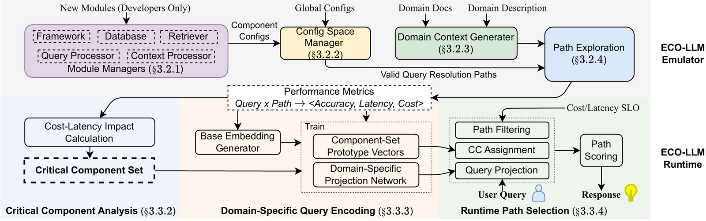
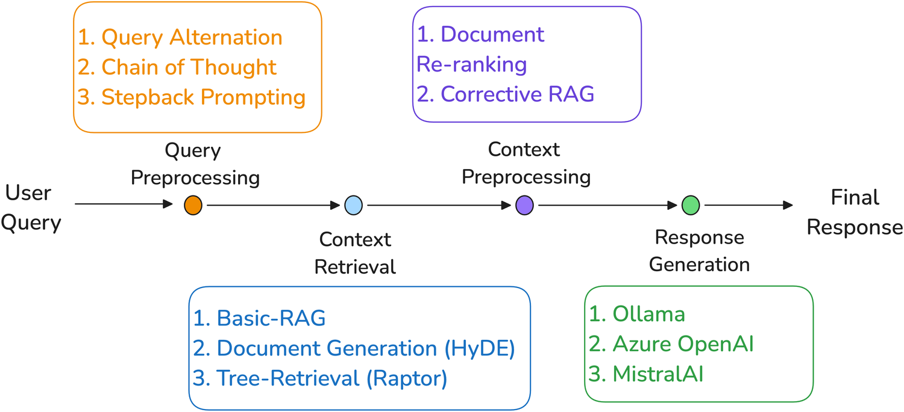
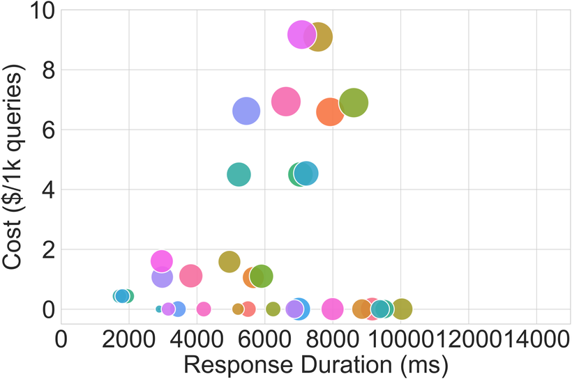
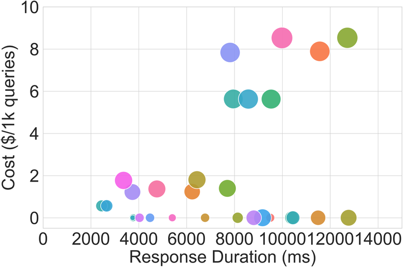
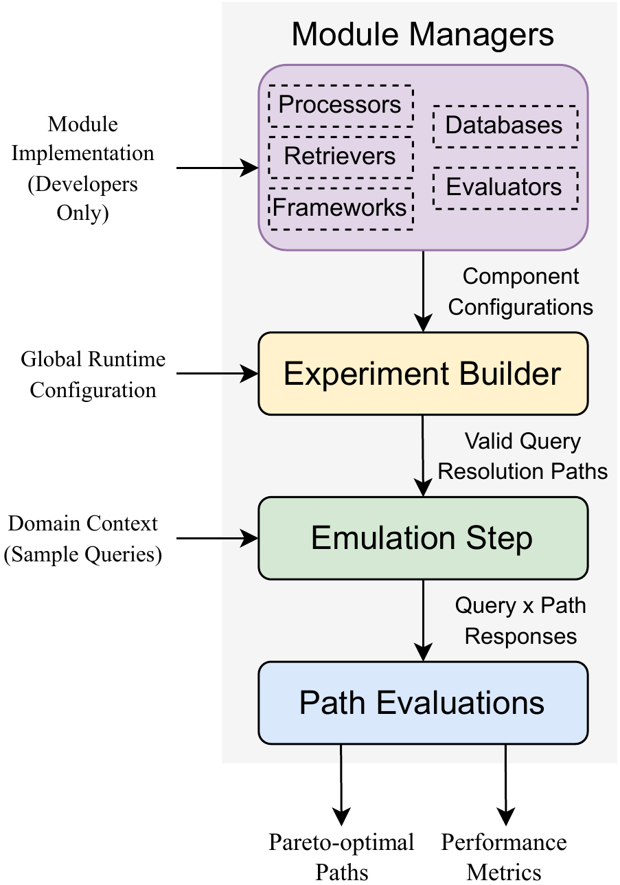
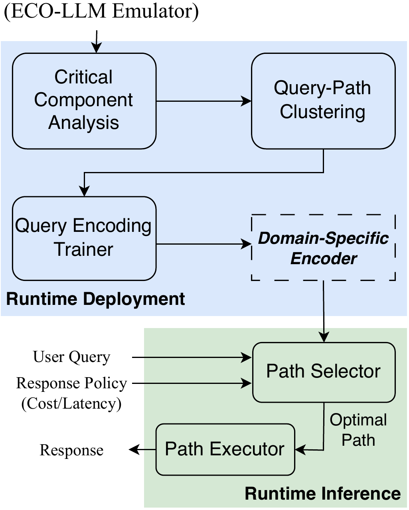

ECO-LLM reframes edge-cloud LLM serving as a joint optimization across the whole pipeline, not model selection alone. An emulator explores component configurations offline, and a runtime selects an optimal resolution strategy for each query while meeting user-defined Service Level Objectives.
Carnegie Mellon University · Microsoft Research
Preprint · arXiv:2507.09003 · 2025

Optimize the whole serving pipeline, not just the model. Explore configurations once per domain with the emulator, then let the runtime pick a path per query under cost and latency SLOs.
Edge-cloud LLM applications need to balance connectivity, latency, and cost. Traditional methods focus on selecting the best model and neglect the interplay between the components of the serving pipeline, such as context retrieval and query preprocessing, or the changing latency and cost constraints.
ECO-LLM (Edge-Cloud Orchestrator for LLMs) reframes this as a joint optimization problem and solves it by systematically exploring component configurations and dynamically selecting strategies at the query level. The ECO-LLM Emulator efficiently explores the configuration space using query clustering and Pareto-optimal path selection, gathering domain-specific performance metrics without exhaustive evaluation. The ECO-LLM Runtime leverages those metrics to select an optimal resolution strategy for each query while meeting user-defined SLOs.
Versus state-of-the-art model routing, averaging $2.74 against $7.08 per 1k queries across domains, at comparable accuracy.
Average time-to-first-token of 1.7s against 10.6s for the routing baseline, while meeting the same accuracy.
Stable across five domains, where model-routing approaches show high variance (54 to 85%) and degrade on domains that need coordinated preprocessing.
The remarkable performance of Large Language Models (LLMs) has inspired many applications, which often necessitate edge-cloud collaboration due to connectivity, latency, and cost considerations. Traditional methods primarily focus on selecting the best LLM model for optimizing performance, while neglecting the critical interplay between the components of the LLM serving pipeline (context retrieval, query preprocessing, etc.) or the changing latency and cost constraints. We introduce ECO-LLM (Edge-Cloud Orchestrator for LLMs), a novel system that reframes this problem as a joint optimization challenge and solves it by systematically exploring component configurations and dynamically selecting optimal strategies at the query level.
ECO-LLM consists of two components: (1) the ECO-LLM Emulator, which efficiently explores the vast configuration space utilizing query clustering and pareto-optimal path selection, gathering domain-specific performance metrics without exhaustive evaluation; and (2) the ECO-LLM Runtime, which leverages these metrics to dynamically select optimal resolution strategies for user queries while meeting user-defined Service Level Objectives (SLOs).
We evaluate ECO-LLM across five diverse domains on four hardware platforms. Compared to state-of-the-art model routing approaches, ECO-LLM reduces costs by 60% and latency by up to 6x while maintaining consistent performance (73-87% accuracy) across domains, whereas model-routing approaches exhibit high variance (54-85%) degrading significantly on domains that require coordinated query preprocessing rather than model selection alone. ECO-LLM consistently meets user-defined SLOs while maintaining stable accuracy, and its stratified exploration achieves near-equivalent performance with up to 65% fewer evaluations, making systematic domain adaptation practical.
A query is answered by a resolution path. ECO-LLM explores those paths offline, then selects the right one per query online.
A user query is resolved by a query resolution path: an ordered choice of query preprocessing, context retrieval, context preprocessing, and model. Each stage has several implementations and parameters, so the number of possible paths grows combinatorially. The optimal path is not the same for every query or every domain: some queries do better with less context and a stronger model, while others benefit from richer retrieval with a smaller model.

ECO-LLM treats every stage of the pipeline as a swappable component with its own implementations and parameters. New methods plug in behind a common interface, on edge or cloud.
Chain-of-thought and step-back prompting to reshape the query before retrieval.
Basic RAG, hypothetical-document embeddings (HyDE), and tree retrieval (RAPTOR).
Corrective RAG and document re-ranking applied to the retrieved context.
Edge models served via Ollama (SmolLM2, Llama 3.2, Phi-4) or cloud models (GPT-4.1 family).


The emulator characterizes paths for a target domain and hardware setup, once, offline. A Context Generator builds a domain dataset from documentation, then stratified budget allocation evaluates all paths on a small set of representative queries (chosen by clustering query embeddings) and only the most promising paths on the rest. This reduces evaluations from order |Q|×|P| toward order √|Q|×|P| + |Q|×√|P|. Prefix caching reuses shared intermediate results and cuts computation by 30 to 50% in retrieval-heavy domains.


Critical Component Analysis measures how much each component affects accuracy and groups queries by the components that actually matter to them. Domain-specific query encoding learns to predict that group for a new query, since semantic similarity alone is a poor signal: “Turn off the bedroom lights” and “Why will the bedroom lights not turn off?” are similar but need different components. Runtime path selection then filters to paths that satisfy the latency and cost SLOs and contain the required components, and scores them against similar training queries, with a global fallback for out-of-distribution queries.
Two ECO-LLM policies, Cost-First and Latency-First, against model-routing baselines, GPT-4.1, and an exhaustive Oracle.
Averaged across domains, ECO-LLM reduces cost by 61% ($2.74 against $7.08 per 1k queries) and latency by 6× (1.7s against 10.6s) versus the strongest routing baseline, at comparable accuracy (79 to 81% against 80%). On the M4 platform, ECO-LLM(Latency-First) answers in 1.3s for technical support and 2.3s for smart home, against 21s and 22s for the routing baseline, and ECO-LLM(Cost-First) reaches the highest accuracy on smart home, technical support, and IoT security. Stratified exploration reaches near-full accuracy with up to 65% fewer evaluations.
An emulator command-line tool and an OpenAI-compatible runtime server.
The ECO-LLM Emulator is implemented as a Python command-line application that builds an experiment from human-friendly configuration files, runs the configured paths over a query file, and evaluates accuracy, latency, and cost. The ECO-LLM Runtime is implemented as an OpenAI-compatible server that extends the standard API with a build identifier, SLO parameters, and system-state reporting, so it can be dropped into existing workflows.
@misc{patidar2025ecollm,
title = {ECO-LLM: Orchestration for Domain-specific
Edge-Cloud Language Models},
author = {Patidar, Prasoon and Crown, Alex and Hsieh, Kevin and
Xu, Yifei and Chakraborty, Tusher and Chandra, Ranveer and
Agarwal, Yuvraj},
year = {2025},
eprint = {2507.09003},
archivePrefix = {arXiv},
primaryClass = {cs.DC},
url = {https://arxiv.org/abs/2507.09003}
}arXiv preprint
Available as a preprint on arXiv:2507.09003. Figures and text reproduced on this page are © 2025 the authors.
Release planned
The ECO-LLM Emulator and Runtime are planned for open-source release upon publication. No public repository is available yet.